-
Pont d'Avignon
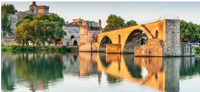
En savoir plus
Le pont d'Avignon ou pont Saint-Bénézet, est un vestige de pont du Rhône construit à partir du 12e siècle ayant maintenant plus que 4 arches.Il servait pourtant de lien avec l’Île de la Barthelasse.Palais des Papes
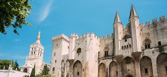Le Palais des Papes est le plus grand palais gothique du monde, classé au patrimoine mondial de l'UNESCO, il a accueilli 9 papes au cours du XIVème siècle. La ville est appelée la cité des papes en référence à ce monument emblématique.
En savoir plusÎle de la Barthelasse
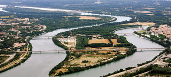L’Île de la Barthelasse est une île fluviale qui s'étend sur une superficie de 700 hectares, ses terres ont été achetées en 1447 par Jean Richard dit « Barthelucius » qui y sema du blé et fit rapidement fortune.
En savoir plusBasilique Saint-Pierre
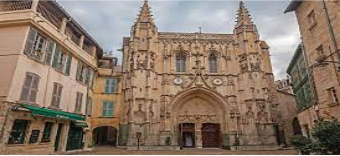La basilique Saint-Pierre d'Avignon est une basilique gothique, Saint-Pierre a été rebâtie à partir de 1385, grâce aux dons du cardinal Pierre de Près. Restée inachevée, sa construction reprit au XVe siècle.
En savoir plusMusée Calvet
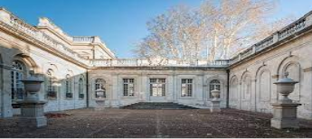Dans un bel hôtel particulier du XVIIIe siècle, se tient la riche collection de Beaux-Arts, peintures et sculptures du XVe au XXe siècle du Musée Calvet qui était trop à l'étroit dans l'ancien couvent Saint-Martial.
En savoir plusLes Halles d'Avignon
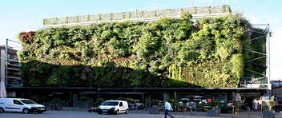Ce marché couvert par une halle est reconnu pour la qualité de ses produits au sein de la cité des Papes.
En savoir plus
Considéré comme un lieu de rencontre et de convivialité, c’est un incontournable.Rocher des Doms
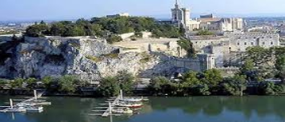Le Rocher des Doms est un éperon rocheux qui surplombe le Rhône, du haut de ses 30 m de falaise abrupte. Il sert de protection pour la fondation et le développement de la ville. Son sommet est couvert d'un jardin public nommé Jardin des Doms.
En savoir plusMusée Angladon
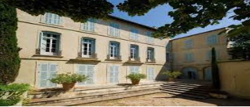Le Musée Angladon - Collection Jacques Doucet est situé
En savoir plus
dans l'hôtel de Massilian et présente des chefs-d'œuvre de Degas, Cézanne, Sisley, Picasso, Modigliani, Van Gogh, provenant des collections du couturier Jacques Doucet.Collégiale Saint-Agricol d'Avignon
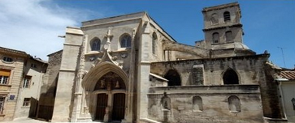La Collégiale Saint-Agricol d’Avignon est une église bâtie au VIIe siècle par saint Agricol.
En savoir plus
Maintenant, L'édifice actuel est classé au titre des monuments historiques en 1980.Les remparts d’Avignon
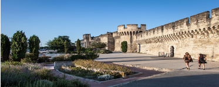
En savoir plus
Les remparts, classés Patrimoine Mondial de l’UNESCO, ceinturent la vieille ville. Longs de 4,3 km, ils furent commencés dès 1355 sous le pontificat d'Innocent VI afin de repousser les assauts des Grandes Compagnies, et achevés en 1370 avec Urbain V.Musée du Petit Palais
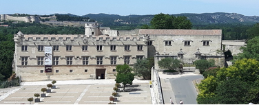
En savoir plus
Étape incontournable de toute visite guidée d'Avignon, le Petit Palais abrite une collection importante de peintures italiennes de la Renaissance, qui comprend des œuvres de Sandro Botticelli et Vittore Carpaccio.Notre Dame des Doms d'Avignon
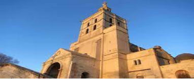Construite au XIIe siècle puis remaniée aux XVe et XVIIe siècles, la Basilique métropolitaine Notre Dame des Doms domine, à côté du Palais des Papes, la vallée du Rhône depuis le rocher des Doms
En savoir plus